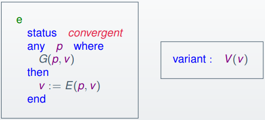

Advanced Software Modelling & Design
Matthew Barnes
Verification in Event-B 3
Proof-based verification 3
Deductive proof 5
Propositions 5
Quantification and Sets 8
Set Theory 10
Tree structures and transitive closure 14
Reachability in transition systems 21
Debugging models with proof and judgement 22
Refinement in Event-B 26
Extension refinement 26
Data refinement in Event-B 27
Event Convergence and Deadlock-freeness in Event-B 28
Reasoning about Programs 29
Contracts and Programs 29
Reasoning about Loops 32
Verification in Dafny 33
Event-B to Dafny 35
Requirements Analysis and Dependable Systems 35
What is Requirements Engineering? 35
Dependable Systems 37
Redundancy and Diversity 39
Formal Methods and Dependability 39
Safety critical systems 39
Safety critical systems and requirements 39
Safety engineering processes 42
Safety cases 44
Security Engineering 45
Security and dependability 48
Security and organisations 48
Security requirements 48
Secure systems design 48
Secure systems programming 48
Security testing and assurance 48
STPA 48
STAMP 49
Verification in Event-B
Proof-based verification
-
Requirements validation: The extent to which informal requirements satisfy the needs of the stakeholders (what does the client actually need?)
-
Model validation: The extent to which the formal model accurately captures the informal requirements (how well does the model fit with what the client
wants?)
-
Model verification: The extent to which a model correctly maintains
invariants or refines another (more abstract) model (is there bugs?)
-
Code verification: The extent to which a program correctly implements a
specification / model (the model is good, but how well does the actual code
follow that model?)
-
Verification through model checking: transforming the machine into a state space and exploring
it through software like Pro-B
-
It’s completely automatic, is a powerful debugging
tool and helps to visualise the system
-
Verification through proof obligations: testing theorems on the machine and checking for any
conflicts / contradictions using logic, arithmetic and set
theory.
-
No restrictions on state space, can discover invariants
that deepen understanding but is not completely
automatic
-
S ⊆
T ⇔
(∀x · x ∈ S ⇒ x ∈ T)
-
x ∈ (S ∪
T) ⇔ (x
∈ S ∨ x ∈ T)
-
Sequent: an assertion including a hypothesis (H) and a goal (G). A
sequent is valid if G follows from H. It’s written
as H ⊢ G
-
In other words, if G is true when H is true, then the
sequent is valid.
-
All Event-B proof obligations are sequents.
-
Bound variable: a variable introduced with a quantifier, like ∀ or
∃
-
Free variable: a variable used but not bound by a quantifier
-
x is a bound variable
-
y is a free variable
-
Substitutions in proofs are very similar to beta-reduction.
- Let:
-
P be a predicate
-
x be free variables in P
-
E be an expression
-
You can perform a substitution like this:
-
See? Very similar to beta reduction!
-
Here are some more examples:
(x ∈ S ⇒ x > y) [x := x + 1] is x + 1 ∈ S ⇒ x + 1 > y
-
Here, each x is turned into x + 1.
(∀x · x ∈ S ⇒ x > y) [x := x + 1] is (∀x · x ∈ S ⇒ x > y)
-
Nothing happens because x is bound, and we only substitute free
variables.
-
Multiple substitution is the same thing, except we can substitute lots of
variables at once.
-
It works like this: P [x1, x2, x3, x4 ... := E1, E2, E3, E4 ...]
-
Where x1 is replaced by E1, x2 is replaced by E2 and so on.
-
Here’s even more examples:
(l < n ∧ n ≤ m) [l,m,n := 0,10,7] is 0 < 7 ∧ 7 ≤ 10
-
l is turned into 0, m is turned into 10 and n is turned into 7.
(x ∈ S ∧ y ∈ T) [x,y := y,x] is y ∈ S ∧ x ∈ T
-
Invariant Preservation Proof Obligation (or Invariant Preservation PO) is a proof obligation that proves invariants
still hold even after events are called.
- Let:
-
Inv be the invariant we want to preserve
-
Ev be the event defined as: any x where Grd then v := Exp end
-
Then the corresponding PO would be:
-
Inv, Grd ⊢ Inv [v := Exp]
-
In English, this means that the updated invariant Inv [v := Exp] follows from the original invariant Inv and the guard Grd.
-
Want some explained examples?
-
Example 1:
-
Invariant: x + y = C
-
Event: begin x, y := x + 1, y - 1 end
-
By using the usual formula as described above, we get our
PO:
-
x + y = C ⊢ (x + y = C) [x, y := x + 1, y - 1]
-
So, what does this actually mean? Basically, if the
expression on the left infers the expression on the right,
this PO will be valid.
-
To make more sense of this, let’s perform the
substitution:
-
x + y = C ⊢ (x + 1) + (y - 1) = C
-
Now, we’ve substituted our values in on the right
side. With a bit of algebra, we can clean this up a bit and
get rid of those 1’s:
-
x + y = C ⊢ x + y = C
-
Looks like we’ve simplified the right to be equal to
the left! This shows that this PO is valid, and it also
shows that the event above can never violate the invariant
above.
-
Invariant: ctr ≤ Max
-
Event: when ctr < Max then ctr := ctr + 1 end
-
Again, by applying the rule above, we get our PO:
-
ctr ≤ Max, ctr < Max ⊢ (ctr ≤ Max) [ctr :=
ctr + 1]
-
Let’s perform substitution again:
-
ctr ≤ Max, ctr < Max ⊢ ctr + 1 ≤ Max
-
Now we need to think to ourselves; if the left is true,
will the right also be true?
-
Well, if the left is true, that means ctr must be strictly less than Max, because the guard condition is more constricting than the
invariant.
-
If ctr is strictly less than Max, then that means ctr + 1 ≤ Max must be true because ctr + 1 can only ever equal Max or be less than it.
-
By showing this, we’ve proven that this PO is valid
and that the event will never violate the invariant.
Deductive proof
-
So, we have our proof obligations in the form of sequents,
but how do we prove them formally?
-
We use inference rules and form a proof tree!
-
Inference rule: a rule for inferring the validity of a sequent from the
validity of one or more sequents
-
Basically, it’s a logical “law” that can
be applied to a sequent.
-
An example of an inference rule is “deduction”,
which goes like this:

-
A sequent H ⊢ G is valid if G can be deduced from H using inference
rules.
-
If G is contained in H, then H ⊢ G is (trivially) valid.
-
Proof tree: a tree of applied inference rules upon a sequent, where
the starting sequent is the root, all the paths are
inference rules, all the nodes are resulting sequents from
those rules and all of the leaves are trivially valid
sequents.
-
To prove that a sequent is valid, we construct a proof tree
to break it down into several trivial sequents.
Propositions
-
These are the propositional inference rules:
|
Inference rule name
|
Inference rule
|
Explanation
|
|
Deduction
|
|
If we see an ‘implies’ in the goal,
we can use deduction to get rid of it and add
the left part to the hypothesis.
|
|
Modus ponens
|

|
If there’s an ‘implies’ in
the hypothesis, we can split it up into two
branches.
|
|
Hyp
|

|
This is usually used at the end, when the goal
also exists in the hypothesis.
|
|
Introduce conjunction
|

|
If there is an ‘and’ in the goal,
we can split the goal into two branches, one
where the left is true and one where the right
is true.
|
|
Proof by cases
|

|
If there is an ‘or’ in the
hypothesis, we can split that or into two
branches: one where the left is true, and one
where the right is true.
|
|
Proof by contradiction
|

|
If there is a ‘not’ in the
hypothesis, we can swap that with the goal and
‘not’ the goal.
|
-
Remember, inference rules are applied backwards.
-
For example, in deduction, we don’t go from H, P ⊢ Q to H ⊢ P ⇒ Q.
-
We go from H ⊢ P ⇒ Q to H, P ⊢ Q instead.
-
Why? Because we want to reduce what’s in the goal,
and (maybe) change what we have in the hypothesis. The goal
is what we want to prove, and our hypothesis is what we
already know to be true.
-
Here’s an example proof tree using these rules:
Quantification and Sets
-
These are the inference rules for quantification and
sets:
-
Rules that can be applied automatically
-
Rules that use pattern matching to help with
instantiation
|
Inference rule name
|
Inference rule
|
Explanation
|
|
For-all instantiation in goal
∀-GOAL
|

|
This is used to get rid of a ‘for
all’ in the goal. Basically, this moves
the scope of the ‘for all’ from just
the goal to the entire sequent.
If x is free in H, then any fresh variable name
is used for x.
|
|
For-all instantiation in hypotheses
∀-HYP
|

|
This is used to instantiate a ‘for
all’ in the hypothesis.
Think of the ‘for all’ statement as
an ‘expression factory’ and
you’re generating new hypothesis
statements from it by substituting expressions
into it as ‘x’.
The question is, what should you substitute as
‘x’?
|
|
Existential instantiation in goal
∃-GOAL
|

|
Just like for-all instantiation in goal, we
move the scope to the whole sequent.
However, this time, we can substitute x for
something, like with the hypotheses rules.
|
|
Existential instantiation in hypotheses
∃-HYP
|

|
Just like for-all instantiation in hypothesis,
we pick an expression or variable to substitute
as ‘x’ and we get a new
statement.
Only this time, the ‘there-exists’
statement is replaced / destroyed.
If ‘x’ is free in H or Q, then we
will use a fresh variable name. Otherwise,
we’ll just use ‘x’.
|
-
Here is an example proof tree using these rules:
-
Rewrites are rules that bridge the gap between set logic and
predicate logic.
-
They also convert other logics to a more workable format,
such as logical equivalence.
-
Here are the rewrite rules:
|
Rewrite rule name (if applicable)
|
Rewrite rule
|
Explanation
|
|
Rewrite in goal
|

|
If E is equal to F, then replace all instances
of E with F
|
|
Rewrite in hypotheses
|

|
The same as the above, but we’re
replacing in the hypotheses
|
|
|

|
Converts two equal sets into subset
predicates
|
|
|

|
Converts subset predicate into a quantified
expression
|
|
|

|
Converts union into a predicate
|
|
|

|
Converts intersection into a predicate
|
|
|

|
Converts difference into a predicate
|
|
|

|
Converts a relation call into predicates
|
|
|

|
Converts the inverse relation to the normal
relation
|
Set Theory
-
First of all, a refresher on set comprehension (because the
syntax in the slides is a bit backwards)
-
Set comprehension goes like this:
-
Where ‘v’ are the variables, ‘P’ is
a predicate that must be satisfied on those variables and E
is the expression that will be in the set.
-
If E = v, the syntax goes like this:
-
For example:
-
Here’s a rewriting rule for the ordered pair:
-
There are more inference rules for set theory
operators:
-
Here are the inference rules for set inclusion and set
equality:
-
Here are the inference rules for negated operators:
-
Here are the inference rules for the elementary set
operators:

-
Here are the inference rules for the binary relation
operator memberships:

-
Here are the inference rules for function operator
memberships:

-
Here is the inference rule for function application:
Tree structures and transitive closure
-
File hierarchies are basically tree structures.
-
Assuming you did Algorithmics, you know how a tree
structure works.
-
How do we model this in Event-B?
-
First, an entity relationship diagram:
-
Now that we know what each entity does, we can start
building our machine. First, let’s define what files
and directories are:
|
sets OBJECT
variables file, directory, object
invariants
file ⊆ OBJECT
directory ⊆ OBJECT
object = file ⋃ directory
file ⋂ directory = Ø
|
-
We can simplify this using the ‘partition’
operator. Do you still remember the ‘partition’
operator from last year?
-
If not, it works like this:
-
Where S is the set with all the elements and Tn are all the partitions of S, where
-
S = T1 U ... U Tn (all the partitions union back up to S)
-
Ti ∩ Tk = Ø each i,k where i != k (no partition shares any elements)
|
sets OBJECT
variables file, directory, object
invariants
object ⊆ OBJECT
partition(object, file, directory)
|
-
Let’s add the ability to have names and file
contents
|
sets OBJECT, NAME, CONTENT
variables file, directory, object, name, content
invariants
object ⊆ OBJECT
partition(object, file, directory)
name ∈ object → NAME
content ∈ file → CONTENT
|
-
We can have files and directories now, but we don’t
have any hierarchy.
-
How do we model parents?
-
There are several rules with parents:
-
The root has no parent
-
Each object (except the root) has one parent
-
Every parent is a directory and not a file
-
The root is an ancestor of every object
-
No object is its own ancestor (no loops)
-
We can add a parent relation as follows:
|
sets OBJECT, NAME, CONTENT
constants root
axioms root ∈ OBJECT
variables file, directory, object, name, content,
parent
invariants
object ⊆ OBJECT
partition(object, file, directory)
name ∈ object → NAME
content ∈ file → CONTENT
parent ∈ (object \ {root}) →
directory
|
-
Now we have parents, but how do we have ancestry? For
example, how do we go back a few folders instead of just
one?
-
We use something called transitive closure, which is a property which is present when a relation is
transitive.
-
In case you don’t know, transitive means if a ↦
b ∈ T and b ↦ c ∈ T, then a ↦ c ∈
T
-
Transitive closure can be achieved with:
-
Where R is an existing relation.
-
R is a subset of R+, but R+ is transitive.
-
So if R contains a ↦ b and b ↦ c, then R+ would contain a ↦ b, b ↦ c and a ↦
c.
-
We can even recursively define transitive closure like
so:
-
We can use this to model ancestry by applying this to the ‘parent’ relation.
-
Now we can model two invariants:
-
the root is an ancestor of every object
-
no object is its own ancestor
|
sets OBJECT, NAME, CONTENT
constants root
axioms root ∈ OBJECT
variables file, directory, object, name, content,
parent
invariants
object ⊆ OBJECT
partition(object, file, directory)
name ∈ object → NAME
content ∈ file → CONTENT
parent ∈ (object \ {root}) →
directory
∀o.o ∈ object \ {root} ⇒ o
↦ root ∈ parent+
∀o.o ∈ object ⇒ o ↦ o
∉ parent+
|
-
Let’s also add some operations. Firstly, let’s
make our machine able to move files and folders
around:
|
sets OBJECT, NAME, CONTENT
constants root
axioms root ∈ OBJECT
variables file, directory, object, name, content,
parent
invariants
object ⊆ OBJECT
partition(object, file, directory)
name ∈ object → NAME
content ∈ file → CONTENT
parent ∈ (object \ {root}) →
directory
∀o.o ∈ object \ {root} ⇒ o
↦ root ∈ parent+
∀o.o ∈ object ⇒ o ↦ o
∉ parent+
events
MoveObject ≙
any o, d where
o ∈ object \
{root}
d ∈ directory
d ≠ parent(o)
n does not clash with other objects in d
move does not introduce a loop
then
parent(o) := d
end
|
-
As you can see, we have two more guard cases that we need
to implement.
-
The red one ensures that the name of the object we’re
copying does not clash with any other objects in the same
directory we’re copying to.
-
So how do we do this? We need to check if the name of our
object isn’t within the name of the children of the
directory we’re copying into.
-
We can do this like so:
|
children = parent~[ {d} ]
name(o) ∉ name[children]
|
-
How about the blue one?
-
We just need to make sure our object isn’t an
ancestor of our target directory:
-
So now our whole thing looks like this:
|
sets OBJECT, NAME, CONTENT
constants root
axioms root ∈ OBJECT
variables file, directory, object, name, content,
parent
invariants
object ⊆ OBJECT
partition(object, file, directory)
name ∈ object → NAME
content ∈ file → CONTENT
parent ∈ (object \ {root}) →
directory
∀o.o ∈ object \ {root} ⇒ o
↦ root ∈ parent+
∀o.o ∈ object ⇒ o
↦ o ∉ parent+
events
MoveObject ≙
any o, d, children where
o ∈ object \
{root}
d ∈ directory
d ≠ parent(o)
children = parent~[ {d} ]
name(o) ∉ name[children]
d ↦ o ∉ parent+
o ≠ d
then
parent(o) := d
end
|
-
Two objects in the same directory cannot have the same
name.
-
We should model this as an invariant:
|
sets OBJECT, NAME, CONTENT
constants root
axioms root ∈ OBJECT
variables file, directory, object, name, content,
parent
invariants
object ⊆ OBJECT
partition(object, file, directory)
name ∈ object → NAME
content ∈ file → CONTENT
parent ∈ (object \ {root}) →
directory
∀o.o ∈ object \ {root} ⇒ o
↦ root ∈ parent+
∀o.o ∈ object ⇒ o
↦ o ∉ parent+
∀p,q.p ∈ object \ {root}
∧
q ∈ object \ {root} ∧
p ≠ q ∧
parent(p) = parent(q)
⇒
name(p) ≠ name(q)
events
MoveObject ≙
any o, d where
o ∈ object \
{root}
d ∈ directory
d ≠ parent(o)
children = parent~[ {d} ]
name(o) ∉ name[children]
d ↦ o ∉ parent+
o ≠ d
then
parent(o) := d
end
|
-
Using the same rules as before, we can also create a
“create directory” event:
|
sets OBJECT, NAME, CONTENT
constants root
axioms root ∈ OBJECT
variables file, directory, object, name, content,
parent
invariants
object ⊆ OBJECT
partition(object, file, directory)
name ∈ object → NAME
content ∈ file → CONTENT
parent ∈ (object \ {root}) →
directory
∀o.o ∈ object \ {root} ⇒ o
↦ root ∈ parent+
∀o.o ∈ object ⇒ o
↦ o ∉ parent+
∀p,q.p ∈ object \ {root}
∧
q ∈ object \ {root} ∧
p ≠ q ∧
parent(p) = parent(q)
⇒
name(p) ≠ name(q)
events
MoveObject ≙
any o, d where
o ∈ object \
{root}
d ∈ directory
d ≠ parent(o)
children = parent~[ {d}
]
name(o) ∉
name[children]
d ↦ o ∉ parent+
o ≠ d
then
parent(o) := d
end
// I’ve added it over here
CreateDirectory ≙
any p, n, children, result where
p ∈ directory
n ∈ NAME
children = parent~[{p}]
n ∉ name[children]
result ∈ OBJECT \
object
then
object := object ⋃
{result}
directory := directory
⋃ {result}
parent(result) := p
name(result) := n
end
|
-
The blue bits are included because we don’t want to
create a directory with the same name as one of its sibling
objects.
Reachability in transition systems
-
We’ve had transitive closure, but what’s reflexive transitive closure?
-
It’s like R+, except now we include reflexive relations (mappings to
ourselves).
-
It’s written like R* .
-
We can build it from R+ like so: R* = R+ ∪ IDs
-
But what is that IDs thing? That’s an identity relation.
-
It maps every element to itself, so ID{a,b,c} = {a ↦ a, b ↦ b, c ↦ c}
-
How do we define reachable states in a transition
system?
-
First of all, a state is a configuration of the variables
in a machine.
-
A reachable state is a state in which we can get from our initial state
s0 to a reachable state sn through available transitions going from s0 -> s1 -> s2 -> ... -> sn.
-
More formally, the set of reachable states would be R*[init], a relational image where init is the set of initial states and R* is the reflexive transitive closure of the transition
relation.
-
So, when you think about it, a reachable state is a state
in the range of a relation that maps states to other states
based on available transitions.
-
There are also deadlocks.
-
Deadlock? Isn’t that the thing where the philosophers
try to take two forks to eat spaghetti but they can’t
because there’s not enough forks to go around?
-
Not really; in Event-B, a deadlock is a reachable state
that has no successor states. It’s basically a
dead-end.
-
More formally, the set of deadlocked states DL satisfies
the condition:
-
DL ∩ dom(R*) = Ø you can’t transition anywhere in a DL state
-
DL ⊆ ran(R*) but you can still reach a DL state
-
If we make a machine that solves a problem, deadlocks are
usually good things (they’re the solutions).
-
If we make a machine that actually does something (like an
elevator system or a train system), deadlocks are bad
because we have no idea what to do next.
-
ProB can spot deadlocks by making all types finite.
Debugging models with proof and judgement
-
An inductive invariant is an invariant that holds on initialisation and cannot be
broken by any event transition.
-
An inductive state has two components:
-
Base case: “Invariant establishment” - when the initial
state satisfies the invariant
-
Inductive step: “Invariant preservation” - when you perform
an event from a state that holds the invariants, s1, the state you arrive at, s2, must hold the invariants
-
When both of these are true, your invariant is an inductive
one.
-
So when you start at the base case, the invariants are
held. When you perform an event, the invariants are also
held. Inductively, you will never break the inductive
invariants, as long as these two components hold.
-
Not all invariants are inductive, like so:
|
Inductive
|
Non-inductive
|
|
Initialisation: n := 0
Inc:
when n != 3
then n := n + 1
n <= 3
The initialisation holds this invariant, and
there does not exist a state s1 (that holds the invariants), and an event
such that:
s1 → s2
where s2 breaks the invariants.
|
Initialisation: n := 0
Inc:
when n != 3
then n := n + 1
n <= 4
Initialisation holds the invariant, but on the
state where n = 4, the Inc event can break this
invariant by making n = 5.
|
-
This is a visual representation of our machine. Inside the
shapes, their “property” holds, and each point
on the image is a state. For example, the points inside the
invariants box are states that satisfy the invariants.
Points outside the invariants box do not satisfy the
invariants.
-
The black dots are states, and the arrows with the letters
are events.
-
Our goal is to make the invariants space and the reachable
states as close together as possible.
-
So far, this image seems OK; no problems here.
-
What if one of our events breaks the invariants?
-
If we break an invariant, that means we’ll get an
unprovable PO.
-
There are four things we can do, in two categories:
-
Weaken the invariant
-
Modify the actions
-
Strengthen the hypotheses
-
Strengthen the guard
-
Strengthen the invariant
-
Whoa! So many ways to fix this! Which do we choose? It
depends on your model, but this is how each solution
works:
-
Weaken the goal: Weaken the invariant
-
By weakening the invariant, we are making the arrival state
satisfy the invariants.
-
More specifically, we are allowing more states to satisfy
the invariants.
-
In the example above, if we change the invariant n <= 4
to n ∈ Ｎ, we are weakening the invariant and
bringing that arrival state into our scope of inductive
invariants.
-
That fixes the model, but it’s not really what we
wanted. Allowing n to be any natural number might not be
part of the specification.
-
Weaken the goal: Modify the actions
-
When we modify the action, we’re changing the arrival
state to be one of the possible inductive states. Adding
actions also counts as modifying the actions.
-
In the example, we can do this by making n := n.
-
As you can see, this trivially satisfies the invariants,
because it doesn’t do anything; we will only ever be
in the initial state.
-
Clearly, this isn’t what we want. However, it still
fixes the model.
-
Strengthen the hypothesis: Strengthen the guard
-
If we strengthen the guard, we can disable the event on
states that will lead us to a non-inductive state.
-
In the example, we can do this by making the guard n != 3
to n < 3. That definitely seems like the right
answer!
-
Strengthen the hypothesis: Strengthen the invariant
-
By strengthening the invariant, we will not be able to
reach the state that will lead us to a non-inductive state
in the first place.
-
In the example, we can do this by changing n <= 4 to n
<= 3. This works very well!
-
In the same way that we follow the cycle of programming and
testing to improve software, in modelling we follow the
cycle of modelling and proving to improve a model.
Refinement in Event-B
Extension refinement
-
Abstraction: a simplification of how a system works; hides away more
complex details
-
In Event-B, we start off with the most essential features
of a model through abstract machines, and we refine those machines to:
-
Augment existing functionality
-
Explain how some purpose is achieved (that’s data
refinement, which is next)
-
M1 is a refinement of M0
-
M0 is an abstraction of M1
-
We can postpone system features to later refinement steps,
allowing us to manage system complexity in the design
process.
-
Properties are preserved during refinement.
-
Proof obligations can help us identify inconsistencies with
refinement steps.
-
There are four forms of refinement:
-
Extension
-
Add variables and invariants
-
Extend existing events to act on new variables
-
Add new events to act on new variables
-
Extension with Guard Modification
-
Similar to extension, but we modify guards of existing
events
-
Variable Replacement / Data Reification
-
Replace variables with other variables
-
Modify existing events, add new events
-
Variable Removal
-
Remove variables that have become redundant through earlier
introduction of other variables
Data refinement in Event-B
-
When you have abstract and concrete variables, you need to
stick them together using gluing invariants.
-
You replace variables v with variables w and add invariants
J(v, w).
-
Then you modify guards and actions of existing events to
use your new variables
-
You can add new events to act on the new variables
-
Extension refinement: augmenting existing functionality (adding new stuff to an existing abstraction model)
-
Data refinement: explain how purposes are achieved (converting high-level data sets into low-level
structures, e.g. sets to arrays)
-
Abstraction: the “what”,
non-deterministic
-
Refinement: the “how”, deterministic
-
Abstract events are supposed to be able to simulate
concrete events.
-
What does that mean?
-
It means this, exactly:
-
When you refine an event, the following must be true: when
the invariants, gluing invariants and the concrete guards
hold, then the abstract guard must hold also.
-
Basically, the concrete guard is stronger than the abstract guard.
-
Additionally, the gluing invariants must be preserved after
the event also.
Event Convergence and Deadlock-freeness in Event-B
-
A set of events will converge if you’ll eventually reach a state where all events
are disabled. Essentially, a deadlock.
-
If a set of events do not converge, they will go on
forever.
-
How do we know when a loop ends? How can we prove that a
set of events converge?
-
We use a variant!
-
What’s a variant?
-
A variant is an expression that changes with each iteration of a
loop.
-
For example, when doing a linear search through an array,
(the length of the array) - (the current index of the array)
could be the variant.
-
A variant can come in one of two forms:
-
Natural number (like the linear search)
-
Some finite set

-
The proof obligations for the variant could be (for natural
numbers):
-
If you can prove the variant goes down / changes each
iteration, you can prove that a loop converges.
-
What about deadlocks? How can we prove that deadlocks
cannot occur?
-
Fortunately, there’s just one PO that solves
this:
-
Basically, that PO says that if the invariants are true,
then either the guards for event 1 hold, or the guards for
event 2 hold and so on. It ensures that at least 1 event has
its guards satisfied.
-
Usually, this is added as a theorem in the machine.
Reasoning about Programs
Contracts and Programs
-
Precondition: collection of properties that can be assumed true before
executing a method. It is an assumption.
-
Postcondition: collection of properties that a method is supposed to
have achieved when it completes. It is an obligation.
-
A contract has preconditions and postconditions.
-
Lots of things can be contracts:
-
Method contract: Precondition + Postcondition
-
Module contract: List of method contracts
-
Hoare logic: formal rules to prove that a program satisfies a
contract, created by Tony Hoare
-
Reasoning about iteration requires:
-
Invariants - properties that are preserved each iteration
-
Variants - properties that are decreased each iteration
-
Preconditions, postconditions, invariants and variants are
all examples of assertions; things that must be true in a
program.
-
To formally represent this, we use a Hoare triple.
-
A Hoare triple is a structure that formally defines a program establishing
a postcondition if a precondition is true.
-
The syntax goes like this:
<PRE> PROG <POST>
-
PRE: The precondition that must be true first
-
PROG: the program that, when executed, will satisfy POST
-
POST: The postcondition that must be true after PROG is
executed
-
<true> x := 10; <x > 0>
-
<true> x := 10; <x = 10>
-
<x > 2> x := x + 1; <x > 2>
-
<x = 2> x := x + 1; <x = 3>
-
<true> x := x + 1; <???>
-
There! Aren’t they pretty?
-
What? You want to know what the ??? means?
-
Hmm... how do we say “x increments by 1” using
Hoare logic?
-
There’s a special syntax for referring to old
variables: that’s the old function!
-
You can only use it in postconditions (obviously) and it
returns the value of the variable before the program, like
so:
-
<true> x := x + 1; <x = old(x) + 1>
-
Now we’ve filled in that postcondition space!
-
But how do we prove a Hoare triple? Do we just accept that
it’s right? It just works?
-
We can convert a triple into a formula to prove,
from:
<PRE> x := E(x) <POST>
PRE[x:=old(x)] ∧ x=E(old(x)) ⇒ POST
-
The PRE[x := old(x)] is a substitution, replacing x with
old(x).
-
For example, the triple:
-
<x > 2> x := x + 1; <x > 3>
-
... can be proved by proving:
-
old(x) > 2 ∧ x = old(x) + 1 ⇒ x > 3
-
We can prove this using deductive proof, like before! All
we need is the right tack at the start! (I did it by doing deduction -> rewrite in goal ->
simplification (just reordering terms) -> hyp)
-
This is great if our program is just one line, but unless
we’re working in Haskell, normal programs won’t
be like that.
-
We can delimit our sequences with semicolons:
<PRE> PROG1 ; PROG2 <POST>
-
When we have that, we need to prove that there exists some
assertion PRED such that:
<PRE> PROG1 <PRED>
<PRED> PROG2 <POST>
-
<x > 0> x := y + 5 ; x := x * 2 <x = 2(y + 5)>
-
We could split this into:
-
<x > 0> x := y + 5 <x = y + 5>
-
<x = y + 5> x := x * 2 <x = 2(y + 5)>
-
If you converted these into formulas, they would prove to
be true.
-
If you know the program and the postcondition, you can
infer a precondition.
-
If you have:
<???> PROG <POST>
-
... you can infer the precondition with:
<POST[x:=E(x), old(x):=x]> x:=E(x) <POST>
-
... we could infer the precondition, so inside x ≤ y we would replace x with E(x) (which is x + 1 in this
case), and old(x) with x to give us our inferred
precondition:
-
<x + 1 ≤ y> x := x + 1 <x ≤ y>
-
<x ≤ y - 1> x := x + 1 <x ≤ y>
-
This also works for Hoare triples that are impossible, such
as:
-
<???> x := 1 <x = 0>
-
<1 = 0> x := 1 <x = 0>
-
You can never prove 1 is equal to 0, so this Hoare triple
is nonsense.
-
We can also do if statements:
<PRE> if cond PROG1 else PROG2 <POST>
-
... can be represented like:
<PRE ∧ cond> PROG1 <POST>
<PRE ∧ ¬cond> PROG2 <POST>
Reasoning about Loops
-
A loop has several components:
Init;
WHILE Grd DO
INVARIANT Inv
Body
ENSURES Post
END
-
Init - the initialisation before the loop
-
Grd - the condition that holds while the loop is running
-
Inv - the preconditions that must be true when the loop starts
and runs
-
Body - what the loop actually does
-
Post - the postcondition that must be true once the loop
ends
-
To ensure correctness in a loop, three properties must be
satisfied:
-
Init establishes Inv
-
Body preserves Inv when Grd holds
-
Inv and not(Grd) implies Post
-
This will correlate to the three formulas of partial correctness:
-
<Pre> Init <Inv>
-
<Inv ∧ Grd> Body <Inv>
-
Inv ∧ ¬Grd ⇒ Post
-
What? Partial correctness? You’re not happy with that?
-
To get total correctness, you also need to prove that the loop terminates.
-
To ensure that the loop terminates, the two properties must
be satisfied:
-
The loop variant Var is decreased each loop iteration
-
Var never goes below 0
-
This correlates to the two formulas:
-
<Inv ∧ Grd> Body <Var < old(Var)>
-
Inv ⇒ Var ≥ 0
-
If you prove those, you can prove that a loop
terminates.
-
These two, along with the three other rules that prove
partial correctness, make up total correctness.
-
Right, that’s all great, but what has this got to do
with anything?
-
Dafny actually uses Hoare triples in its verifier.
-
It takes the assertions and puts them into triples to
prove.
-
If Dafny can prove all the triples, then the code is
verified.
-
If not, Dafny will throw a fit and the code will not be
verified.
Verification in Dafny
-
What is Dafny?
-
Dafny is a programming language with a program
verifier.
-
It has a huge emphasis on writing safe programs, fitted with all kinds of
assertions.
-
Verification can fail, or it can pass. It can also show you
where you’ve failed and why it’s failed (unfortunately, it can’t tell you what the actual problem is).
-
Methods are written like this:
method Max(x: int, y: int) returns (z: int)
requires x >= 0
requires y >= 0
ensures y > x ==> z == y
ensures x >= y ==> z == x
{
if (y > x) then {
z := y;
} else {
z := x;
}
}
-
The requires bit define preconditions.
-
The ensures bit define postconditions.
-
Method return values can only be put into variables, so
this would work:
-
For stateless operations, like max, summing etc. methods
aren’t really used. Methods are used for side-effects
and changing state. Instead, functions are used.
-
Parameters are immutable.
-
Functions are pure and cannot write to variables:
function sum(x: int): int
requires x >= 0
decreases x
{
if x == 0 then 0 else x + sum(x - 1)
}
-
Like before, requires defines preconditions.
-
Functions do not use ensures because it’s stateless; there’s nothing to ensure.
-
The decreases bit defines a variant, if we use recursion
(it’s technically a loop; the expression value must go
down each iteration).
-
Functions work in expressions, so they can be used in
things like pre/postconditions.
while (n < a.Length)
invariant 0 <= n <= a.Length
invariant r == product(a,n)
decreases a.Length-n
{
r := r * a[n];
n := n + 1;
}
-
The invariant bit defines the invariants of the loop (what remains true
at the start and throughout).
-
The decreases bit defines the variant; the bit that goes down with each
iteration.
-
There are also quantifiers in Dafny:
forall k :: Boolean expression
exists k :: Boolean expression
-
This can be used in assertions.
-
There also exists classes, which stores properties, functions and methods, and there
are modules, which store classes, data types, functions and
methods.
Event-B to Dafny
-
Event-B is quite high-level compared to Dafny. It uses way
more mathematical notation.
-
So how do we convert Event-B to Dafny?
-
First of all, refine the Event-B machine to use arrays
instead of sets.
-
In other words, you perform data refinement towards
implementation.
-
Then, you can start porting it to Dafny.
-
Constants in Event-B can be represented as data types in
Dafny using datatype.
-
You can create predicates in Dafny for things like axioms
and invariants.
-
Variables are just normal variables in Dafny, except sets
are arrays.
-
You can also create a bunch of helper predicates.
-
When implementing the events, create a method for each
event that requires the axioms and the invariants, along
with all the guards.
Requirements Analysis and Dependable Systems
What is Requirements Engineering?
-
Requirements engineering:
-
Establishing the services that a customer requires from a system...
-
... and the constraints under which it operates and is developed
-
System requirements: descriptions of the system services and constraints
-
Software requirements: conditions or capabilities needed by the user to solve a
problem; must be met by the system
-
Functional requirements: what the system’s purpose is (what the system is actually intended to do)
-
Non-functional requirements: constraints on the services / functions (things like safety, performance, usability etc.)
-
Safety and security both come under the “Quality of
Service” branch of the non-functional
requirements:
-
But it’s not always perfect.
-
Problems arise when the requirements are not clear.
-
Ambiguous requirements may be interpreted in different
ways.
-
If you’ve done SEG, you probably know how that
feels.
-
Requirements should have two properties:
-
Complete - should include descriptions of all facilities
required
-
Consistent - no conflicts or contradictions with the descriptions of
the facilities
-
Because of the complexity, it’s impossible to have a
complete and consistent requirements document, but we should
still aim for one as much as we can.
-
There are two more kinds of requirements:
-
User requirements - in the natural language, has diagrams, written for
customers. They should be understandable by users without a
technical background!
-
System requirements - structured document, detailed descriptions of the
functions, services and constraints. Like a
“contract” between client and contractor. They
can be more technical than user requirements.
-
Different ways you can write system requirements:
-
Natural Language
-
Structured Natural Language
-
Design Description Languages
-
Graphical Notations
-
Mathematical Specifications
-
Requirements validation: demonstrating that the requirements define the system
that the customer really wants
-
There are three techniques for this:
-
Requirements reviews - manual analysis of requirements (basically, just checking them)
-
Prototyping - using an executable model of the system
-
Test-case generation - developing tests for requirements
-
Requirement error costs are very high! Validation is
important.
-
Formal specifications are helpful too:
-
Can describe abstractions
-
Can be used alone or with other things such as UML
-
However, it verifies a model of the system, not the
implementation!
-
Formalisation can help find bugs in specifications.
Dependable Systems
-
What does it mean to be dependable?
-
Dependability reflects the user’s trust in a system, and the
confidence they have that the system will work as expected
and not fail.
-
There are several factors to dependability:
-
There’s a few additional factors too, like:
-
Repairability - extent to which a system can be repaired after a
failure
-
Maintainability - extent to which a system can be adapted to new
requirements
-
Error tolerance - extent to which user input errors can be avoided
and tolerated
-
Dependability is important; how can a user use your system
if they don’t trust it?
-
Undependable systems that lose info could result in high
recovery costs.
-
Some things can disturb the factors of dependability,
like:
-
DoS attacks could disrupt availability
-
Viruses could disrupt reliability and safety
-
The types of failures that could happen are:
-
Hardware failures - the physical components fail
-
Software failures - the programs fail
-
Operational failures - someone misuses the system
-
So how do you make your system dependable?
-
Avoid accidental errors
-
Use V & V lifecycle (verification and validation)
-
Design systems to be fault tolerant
-
Design protection mechanisms
-
Configure system for its operating environment
-
Include system capabilities to combat cyberattacks
-
Include recovery mechanisms
-
So, that’s it? We make our systems as dependable as
possible?
-
Not quite; really strong dependability is expensive!
-
That’s like spending 10x the amount of your car on
car insurance!
-
Sometimes, it’s more effective to just have
untrustworthy systems and pay for the failure costs.
-
However, it depends on the system; if you’re making a
huge compactor, and someone gets crushed because
you’re too stingy to pay out a little extra to make it
secure, then you should rethink your choices.
-
Besides, most critical systems are regulated. This means there’s some external regulator that
checks the system before it goes into service.
-
You need to create evidence that your system is dependable,
called an extensive safety case. This applies to the whole system; not just
software!
-
If the regulator guy comes round and sees that your
compactor just turned some poor sod into a human dice, a
lawsuit will be the least of your worries.
If your co-worker starts looking like this, you might need to
loosen the purse strings a little and invest in some
dependability for your system.
Redundancy and Diversity
-
Redundancy: where backups are kept so that if components fail, the
system automatically switches to the backups
-
Diversity: provides the same functionality in different ways, so
components won’t fail in the same way (e.g. using
Windows and Linux)
-
These two should be independent, so no common-mode failures happen (failures that affect one redundant
component, and then fail the rest)
-
However, this makes things more complex.
-
It can also increase the chance of error because of
unanticipated interactions and dependencies of redundant
components.
-
Therefore some engineers advocate simplicity and extensive
V & V as being more effective.
Formal Methods and Dependability
-
Formal methods are based on mathematical representations
and analysis of software.
-
It includes:
-
Formal specification
-
Specification analysis and proof
-
Transformational development
-
Program verification
-
There are also two kinds of approaches:
-
Refinement-based: High-level abstractions of the system are transformed
into lower-level refinements of the system. Like
Event-B.
-
Verification-based: Representations of a software system are proved to be
equivalent, for example a specification and a program
implementing that specification.
-
Using formal methods can help with analysing in detail, to
detect problems, inconsistencies and incompleteness with
requirements.
-
Since it’s formalised, you can automatically analyse,
too (like Pro-B).
-
Testing costs may be reduced if you use a formal
verification method.
Safety critical systems
Safety critical systems and requirements
-
Safety: whether or not a system can cause harm while doing its
job (does not concern whether or not it can do its job)
-
Reliability: conformance to a given specification
-
Reliable systems can be unsafe, like a phone that blows up
when it’s charging.
-
Safe systems can be unreliable, like... any object
that’s supposed to do something but
doesn’t.
-
Fail safe state: a state where if a problem goes wrong the system will go
to this state, so the system is unreliable but everything is
still safe
-
If there is no safe state, a minimum number of operations
must be available to control the system.
-
Safety critical systems: system where it is essential that the system operations
are always safe and never cause damage to people or the
environment.
-
If software controls a safety critical system, the software
itself becomes safety critical.
-
Problems don’t occur at a single point of failure;
that would be too easy to plan and mitigate!
-
Instead, it’s a combination of problems. However,
it’s impossible to anticipate every combination of
what could happen.
-
To develop a safety critical system, we need to identify
hazards and work around them.
-
Hazards are bad.
-
Terminology:
-
Accident - unplanned event that resulted in death, injury or
damage
-
Hazard - condition with the potential for causing an
accident
-
Damage - measure of the loss resulting from a mishap
-
Hazard Severity - assessment of worst possible damage from a
hazard
-
Hazard Probability - chance of a hazard happening
-
Risk - probability that the system will cause an accident
-
How do we achieve safety?
-
Hazard avoidance - the hazard simply can’t happen
-
Hazard detection and removal - the hazard is happening, so we stop it
-
Hazard mitigation - the hazard happens but we mitigate damages
-
Hazard identification: identify the hazards of a system
-
Based on the types of hazard:
- Physical
-
Electrical
-
Biological
-
Service failure
-
For example, for insulin pumps:
-
Insulin overdose (service failure)
-
Insulin underdose (service failure)
-
Power failure due to exhausted battery (electrical)
-
Electrical interference with other medical equipment (electrical)
-
Poor sensor and actuator contact (physical)
-
Parts of machine break off in body (physical)
-
Infection caused by introduction of machine (biological)
-
Allergic reaction to materials or insulin (biological)
-
Hazard assessment: how likely a hazard is and what should we do if it
happens
-
Risks can be categorised as:
-
Intolerable - NEVER ALLOW THIS RISK TO HAPPEN >:O
-
As low as reasonably practicable (ALARP) - Minimise this risk as much as we can
-
Acceptable - What risk?
-
The risk triangle, shows what we should do depending on
size of risk
-
What risks do society accept? They don’t like it when
you do bad things to nature (like pour oil in ocean)
-
Risk classification: a hazard table, like the risk table in SEG, where you
incorporate risk probability and severity.
-
Hazard analysis: finding root causes of risks in a system
-
There are two techniques:
-
Inductive, bottom-up - start with failure and assess hazards from that
failure
-
Deductive, top-down - start with hazard and deduce causes of hazard
-
Fault-tree analysis - deductive top-down technique, put the risk at the root
and identify system states that could lead to that
hazard
-
Link with “and” or “or”
conditions
-
Goal: minimise single causes of the system failure
-
By looking at the tree, we can see the following single
causes that eventually result in this failure:
-
Sensor failure
-
Algorithm error
-
Timer failure
-
Pump signals incorrect
Safety engineering processes
-
Regulators require evidence that safety engineering
processes were used in system development.
-
Agile methods should not be used for safety-critical
systems engineering, because extensive process and
documentation is needed, which contradicts the agile
methodology.
-
However, test-driven development may be used.
-
Safety assurance: making sure the processes are correctly applied to
achieve objectives.
-
Do we have the right processes?
-
Are the processes appropriate for the level of
dependability required?
-
Should we include requirements management, change
management, reviews, inspections etc.?
-
Assurance generates documentation.
-
It’s important for safety critical systems.
-
Activities of this include:
-
Creation of hazard logging and monitoring system
-
Appointment of project safety engineers who have explicit
responsibility for system safety
-
Extensive use of safety reviews
-
Creation of a safety certification system where the safety
of critical components is formally certified
-
Here’s something random: what does a hazard log look
like?
-
Something like this:
-
You also have safety reviews, where the review team assesses whether a system handles a
bunch of hazards correctly.
-
You can also use formal methods. They’re very
specific, and can spot errors before implementation, but
it’s very expensive, the proof may contain errors and
you can get the same level of confidence with V & V
techniques.
-
They can’t guarantee safety, though.
-
However, we can do model checking, like in Event-B or
something. It’s used in small to medium sized critical
systems.
-
You can also use static program analysis, which parses source code and points out erroneous
conditions. They’re effective as an aid to
inspections, but not a replacement to them.
-
Here’s what static analysis checks look out
for:
-
There are also multiple levels of static analysis:
-
Characteristic error checking - checks for erroneous patterns of code
-
User-defined error checking - users define error patterns to check
-
Assertion checking - devs include formal assertions that must hold
-
Useful in weak languages such as C; also good for security
checking. Is now routinely used for security critical
systems.
Safety cases
-
Safety and dependability cases: documents with detailed arguments and evidence that a
level of security/dependability has been reached
-
Normally required by regulators.
-
A safety case can be based on a formal proof, design
rationale, safety proof etc.
-
The contents of a safety case usually go like this:

-
Structured arguments pairs evidence with arguments, which then justifies a
claim.
-
Structured safety arguments concentrate on safety, not if
the program works as intended. That would be correctness arguments, which are stronger.
-
Safety arguments are generally based on proof by
contradiction; we assume that an unsafe state can be
reached, then we prove it wrong using program code.
-
Starting from the end of the code, you work backwards until
you identify all paths that lead to the exit.
-
Assume that the exit condition is false.
-
We show that, for each path leading to the exit, the
assignments contradict the assumption of an unsafe
exit.
Security Engineering
-
How does software fit in with the system?
-
Lots of risks, people can die
-
Let’s build systems so that people don’t
die
-
There exists software development processes that focuses on
security vulnerabilities
-
Goal: minimise security vulnerabilities in design
implementation and documentation
-
Security dimensions (the factors that contribute to
security):
-
Confidentiality - information should not be leaked to people/programs who
shouldn’t know it
-
Integrity - information being damaged or corrupted
-
Availability - information that is accessible might not be accessible
anymore (opposite of confidentiality, instead of the wrong
people getting info, the right people aren’t getting
info)
-
Infrastructure security - security of systems and networks (usually bought
in). Infrastructures are configured to resist attacks
-
Application security - security of the individual programs themselves or
groups of programs. Programs that are designed to resist
attacks
-
Operational security - security of how the operation will be used by the
system and company (e.g. tell others passwords, leaving
computers logged on)
-
System security management:
-
User and permission management - handling users, setting up correct
permissions
-
Software deployment and maintenance - ensuring middleware and software security
-
Attack monitoring, detection and recovery - monitoring unauthorised access
-
Security breaches may be accidental
-
Security: the system’s ability to protect itself from
accidental / deliberate attacks
-
Security is prerequisite for confidentiality + availability
+ integrity
Security and dependability
-
Security and reliability - if a system is attacked, it may compromise
reliability
-
Security and availability - ddos; system no longer up
-
Security and safety - compiler is going to generate correct code
-
Security and resilience - deter, detect and recover from attacks
-
Vulnerability - the core of an attack. Weakness in any cyber system that
can be exploited (the bit of the system itself that can be exploited) (eg. a
weak password system)
-
Threat - circumstance that have potential to cause harm (the situation) (e.g. unauthorised user gains access to
system by guessing credentials)
-
Exposure - possible loss or harm to system, so what the damage a
threat can cause (what we can lose) (e.g. financial loss from future users
who do not want to trust us because we get hacked)
-
Control - a protective measure to reduce / patch a vulnerability (e.g. encryption) (e.g. a password checking system that
disallows users who try to use common passwords)
-
Attack - exploitation of a vulnerability. An actual attack and not
the idea of it (unlike threat), think of it like an
“instantiation” of a threat. Is deliberate (e.g. an impersonation of an authorised user)
-
Asset - something of value that must be protected; the thing that
is destroyed in an exposure. (e.g. the records of each patient)
-
Interception - allows attacker to gain access to asset (e.g. sql
injections)
-
Interruption - allows attacker to make part of the system unavailable
(e.g. ddos)
-
Modification - attacker tampers with asset
-
Fabrication - insert false info into a system
-
Levels of security assurance:
-
Vulnerability avoidance - system is designed so vulnerability does not occur
(highest level of security assurance)
-
Attack detection and elimination - detect attack and eliminate effect of that attack
before it does any damage (e.g. malicious emails put in junk
after being detected)
-
Exposure limitation and recovery - detect attack and minimise the effects of the
attack (e.g. backups are kept when data is
deleted/modified)
Security and organisations
-
Businesses don’t want to spend more on security than
the value of the asset itself
-
So security must be maintained in a cost-effective
way
-
Organisations use a security policy based on risk
analysis
-
Security risk analysis is a business thing, not really a
technical thing
-
You can’t do security if you don’t know who
you’re doing it for / the context in which the system
is in
-
Security policy: general information access strategies that should apply
to whole organisation
-
Security engineering process is concerned with implementing
the goals of the security policy
-
the assets that must be protected - not all assets have to be protected; some can be
made freely available.
-
the level of protection that is required for different
types of asset - personal information? Highly level of security.
Other miscellaneous information, lower level of
security.
-
the responsibilities of individual users, managers and the
organisation - what is expected of users, e.g. strong
passwords
-
existing security procedures and technologies that should
be maintained - use existing rules, even if they’re outdated,
for practicality and cost
-
Preliminary risk assessment - focus on high level risks
-
Life cycle risk assessment - focus on risks during implementation and
design, may change development with risks found
-
Operational risk assessment - focus on risks arising from human
behaviour and system use
-
Basically, do risk analysis early
-
Secure development of life cycle (where risk analysis lies
on your software development life cycle):
Security requirements
-
Security is different to safety, because:
-
Safety problems are accidental, but security is done by an
attacker with intent
-
With safety problems, we’re left in a state where we
can find the root problem, but attackers may conceal the
failure.
-
Shutting down a system can avoid a safety problem, but may
be the aim of a security problem.
-
Safety problems are not generated from an intelligent
adversary; an attacker can probe defences over time to
discover weaknesses
-
Safety - the system must not harm the world
-
Security - the world must not harm the system
-
We need to consider these two together!
-
Six features of secure software:
-
Confidentiality - information should only be accessible to recipient
-
Integrity - information should be accurate
-
Authentication - identity checking
-
Authorisation - permissions
-
Availability - services / information should be available when
needed
-
Non-repudiation - cannot deny involvement of any event
-
Types of security requirement:
-
Identification requirements
-
Authentication requirements
-
Authorisation requirements
-
Immunity requirements
-
Integrity requirements
-
Intrusion detection requirements
-
Non-repudiation requirements
-
Privacy requirements
-
Security auditing requirements
-
System maintenance security requirements
-
Security requirement classification:
-
Risk avoidance - risks cannot arise
-
Risk detection - risks are detected and stopped
-
Risk mitigation - risks happen, and we recover assets afterwards
-
There are also misuse cases, which are like use cases but for attackers exploiting
threats:
-
Interception threats - attacker accesses asset
-
Interruption threats - attacker makes part of system unavailable
-
Modification threats - system asset is tampered with
-
Fabrication threats - false information is added to system
-
Misuse cases also include things like actors, descriptions,
data, stimulus, response, attacks, mitigations, requirements
and comments to be more specific.
Secure systems design
-
Security should happen in the design phase.
-
It’s hard to add security to a system that’s
already been designed / implemented!
-
However, by adding security, you may compromise on:
-
Performance - may be slower
-
Usability - users may have to remember more or perform
additional interactions to complete a transaction

-
You can split up data and place them elsewhere, to be more
secure. You can also duplicate data, but the duplicates must
be encrypted.
-
There are two issues when designing an architecture for
security:
-
How to organise the system so critical assets are
protected?
-
Use a layered protection architecture!
-
Platform-level: the platform which the system runs
-
Application-level: mechanisms in the application itself
-
Record-level: protection when access to info is requested
-
How should we distribute assets to minimise attacks?
-
If there is an attack on one system, we don’t lose
the entire system service.
-
Each distribution may have different protection features,
so they do not share a common vulnerability.
-
If there is high risk of DoS attacks, distribution is
key.
-
However, if assets are distributed, they are more expensive
to protect.
-
The design guidelines for secure systems engineering
are:
Secure systems programming
-
Some problems are language specific!
-
Array bound checking is automatic in Java (assuming you use
for-each or something)
-
However, in C / C++, it’s not checked. It’s
also really widely used, so no opting for some hipster
language instead!
-
Here are the dependable programming guidelines:
Security testing and assurance
-
Security testing: testing the extent to which the system can protect itself
against external attacks.
-
Problems with that:
-
Not usually possible to define security requirements as
simple constraints
-
People attacking a system will look for vulnerabilities,
and discover weaknesses
-
Experience-based testing - analysed against documented
types of attacks
-
Penetration testing - a team tries to break the
system
-
Tool-based analysis - tools such as password checkers are
used
-
Formal verification - formal security specifications
STPA
STAMP
-
System-Theoretic Accident Model and Processes (STAMP) is a foundation for a new causality
model.
-
Accidents are more than a chain of events. They are caused
by inadequate control.
-
Treat accidents as a control problem, not just a failure
problem.
-
Instead of focusing on preventing failures, we enforce safe
behaviours.
-
The STAMP model is constructed from 3 main concepts:
-
Safety constraints
-
Hierarchical Control Structures
-
Process Models
STPA
-
First of all, why does anything go wrong?
-
It’s because there is a disconnect between your
mental model and the system’s model.
-
If there is a disconnect between the two models, you will
make mistakes and problems will occur.
-
Remember, humans are part of the system too, so they need
to be considered.
Safety Control Structure
-
There is a feedback loop, where:
-
The controller takes input from the sensor and issues
control actions to the actuators
-
The actuators pass the control actions to the controlled
process
-
The sensor monitors the state of the controlled process and
passes data back to the controller
-
The human operator can directly control commands on the
controlled process
-
So, does this have anything to do with STPA?
-
Right now, it’s a bit general. The very first thing
we do when we do STPA is we instantiate a version of this
for our case study.
-
System Theoretic Process Analysis (STPA) is a new hazard analysis technique.
-
STPA has 2 main steps
-
Identify “Unsafe Control Actions“
-
Action not performed causing a hazard
-
Action is performed causing a hazard
-
Action performed too late / too early
-
Action performed for too long / too short
-
Determine how the “Unsafe Control Action”s
above could occur
-
It is a table-based approach to analysing the control
actions and deriving the safety constraints
-
We can even use Event-B to model the safety
constraints
-
There is even a mechanism to determine how Unsafe Control
Actions can occur
-
So, how do we actually do STPA?
-
Like this:
-
Define the Safety Control Structure
-
Derive the Safety Constraints from the Functional
Requirements using STPA step 1 (from above)
-
Model the Safety Constraints in Event-B
-
Determine how Unsafe Control Actions could occur using STPA
step 2 (from above)
-
Refine the model and safety constraints to ensure concrete Control Actions are safe in the presence
of hazards
-
The table looks something like this:
|
Action
|
Not provided
|
Provided
|
Too late / too early
|
Too long / too short
|
|
|
|
|
|
|
-
In the exam, you might not need the last two columns.
-
You got all that?
- What? No?
-
You want to go over an example?
-
Huh? You’re also really bored with the notes and
you’re about to drive a knife through your heart
because this module makes you want to two-phase commit stop
yourself from living?
-
What’s that? You’re sick of all these
questions? The last 8 statements were literally
questions?
-
Hey, it’s fine. I know how you feel. Writing these
notes makes me want to jump off building 67.
-
But here’s something that can spice up the
notes.
-
How about, for this next example, we make things a bit more
imaginative?
-
Well then, get ready. Continue reading for a bizarre STPA
example!
-
Have you ever wanted to eat crisps without getting your
hands dirty?
-
With this new machine, now you can!
-
Place the open crisp packet in the slot. Then, lay on the
special chair, and adjust the head strap so the machine
knows where you are.
-
Press the red button. The machine will then move a robotic
arm and take a crisp and feed it into your mouth.
-
The machine will keep going until it has fully fed you the
packet.
-
Eh? Good idea, isn’t it? It’s not totally
random; it actually serves a purpose.
No more greasy fingertips! But is this system secure...?
-
First, let’s identify some requirements:
-
There must be a packet in the slot when the button is
pressed
-
There must be a person in the seat when the button is
pressed
-
The person and crisp packet must stay in place (be locked)
until all crisps in the packet are eaten
-
Now, we can create a Safety Control Structure!
-
Now we can finally identify Unsafe Control Actions.
-
Here, we just take all the actions and fill out this
table:
|
Action
|
Not provided causing a hazard
|
Provided causing a hazard
|
Too late / too early
|
Too long / too short
|
|
Move the robotic arm
|
System won’t do anything; not
hazardous
|
Arm could try to feed the person before they
are sat down or before a crisp packet is in the
slot; the arm could hit someone and hurt
them.
|
Arm could hit the person outside of eating
times.
|
Too long: person will eventually get bored and
thirsty, which is uncomfortable and in some
cases painful
Too short: could accidentally punch the person
in the face with the crisp
|
|
Lock the crisp packet
|
Crisp packet could be taken out while the arm
is moving, therefore no crisps will be taken.
Not hazardous.
|
Crisp packet slot might lock while person is
putting the packet in, therefore locking their
hand in the slot.
|
Too late: crisp packet can be taken out before
it’s locked and before eating
process
Too early: crisp packet could be locked before
the person even starts eating; maybe they
changed their mind and wanted it back again?
Additionally, see left
|
N/A (discrete action)
|
|
Lock the person
|
The person could jump out and then the machine
would feed thin air, or even hit the
person
|
The person could get locked in the chair before
they even put crisps in the slot
|
Too late: the person could jump out and then
the machine would feed thin air, or hit the
person
Too early: see left
|
N/A (discrete action)
|
|
Unlock the crisp packet
|
The crisps would be forever locked, leaving
empty crisp packet rubbish in the slot and not
allowing other crisp packets in the slot.
Doesn’t hurt the person, so not
hazardous.
|
The empty crisp packets can be unlocked during
eating, resulting in the arm accidentally
feeding the person the packet itself and
poisoning them.
|
Too late: the crisp packet is just released a
little later
Too early: read the left
|
N/A (discrete action)
|
|
Unlock the person
|
The person would be locked in the machine
forever, and eventually die of thirst. Not
starvation, because they’ll be fed crisps.
Then again, it’s only one packet, so yeah;
starvation too.
|
Could unlock the person too early, and
they’ll get up and get hit by the
arm
|
Too late: the person will just get up later.
Inconvenient, though.
Too early: see left
|
N/A (discrete action)
|
|
Push the button
|
Can’t kick-start the eating process,
therefore unlocking is not triggered, person and
crisp packet will never leave the system
|
Person presses the button and starts the eating
process. No hazard.
|
Too late: eating process starts a little later.
No hazard
Too early: eating process won’t start
until person and crisp packet are in their
places. No hazard
|
N/A (discrete action)
|
|
Insert crisp packet
|
Machine will never start eating process, so
machine will never move. No hazard
|
Machine locks crisp packet in place. No
hazard.
|
Too late: can’t start the eating process
without crisp packet. No hazard
Too early: No hazard
|
N/A (discrete action)
|
|
Person gets in seat
|
Machine will never start eating process, so
machine will never move. No hazard
|
Person will get in the seat. No hazard.
|
Too late: can’t start the eating process
without person. No hazard
Too early: No hazard
|
N/A (discrete action)
|
-
Now we look at the table and decide upon the safety
constraints based on the hazards:
-
The arm speed should be no faster than around 10 cm per
second
-
Arm should not move before the person and crisp packet is
locked
-
The person and crisp packet should stay locked during
eating, and become unlocked after the packet is empty
-
Only lock when both person and crisp packet are in their
locations
-
We should make an Event-B model from this, but I’ll
spare you that.
-
Now we analyse how they can occur.
-
How can they occur?
-
Most of the problems occur when it’s not clear if a
person is locked or if a crisp packet is locked.
-
Therefore, we could have a sensor to check if a crisp
packet is inserted, and we could have a manual lock for the
person.
-
This is an example of an architectural decision.
-
Once we’ve decided on that, we should refine our
Event-B model.
-
We follow this cycle until our system becomes super
secure!